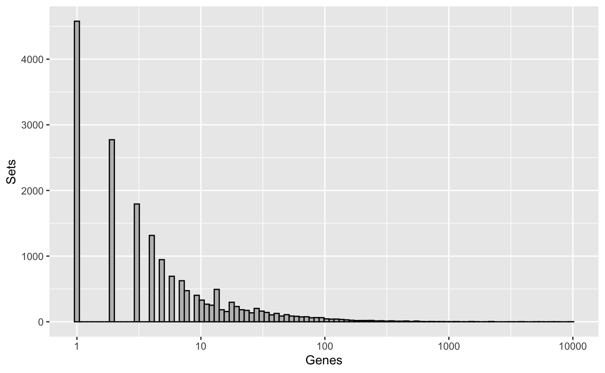
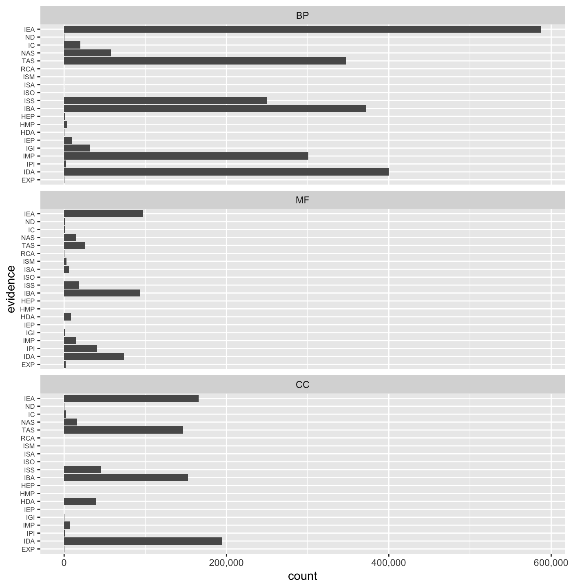

vignettes/bioc-annotation.Rmd
bioc-annotation.RmdAbstract
Importing gene set relationships from Bioconductor annotation packages.Annotation packages are available from Bioconductor for a range of model species. Users may browse BiocViews “AnnotationData” on the Bioconductor website or search packages programmatically using the command below.
Here, we load the human gene annotations.
Go3AnnDbBimap objects (from the AnnotationDbi package) are maps between Entrez gene identifiers and Gene Ontology (GO) identifiers. Those objects may be directly converted to Sets objects as demonstrated below.
## GOSets with 267783 relations between 20207 elements and 17496 sets
## element set | evidence ontology
## <character> <character> | <factor> <factor>
## [1] 1 GO:0002576 | TAS BP
## [2] 1 GO:0008150 | ND BP
## [3] 1 GO:0043312 | TAS BP
## [4] 2 GO:0001869 | IDA BP
## [5] 2 GO:0002576 | TAS BP
## ... ... ... . ... ...
## [267779] 110599583 GO:0046872 | IEA MF
## [267780] 111089941 GO:0004571 | IMP MF
## [267781] 111089941 GO:0005509 | IEA MF
## [267782] 111240474 GO:0005515 | IPI MF
## [267783] 112441434 GO:0005515 | IPI MF
## -----------
## elementInfo: EntrezIdVector with 0 metadata
## setInfo: GOIdVector with 4 metadata (GOID, DEFINITION, ...)Notice how the "element" information is typed as EntrezIdVector, allowing the type of identifier to affect downstream methods (e.g., pathway analyses). The EntrezIdVector class directly inherits from the IdVector class, and benefits of all the methods associated with the parent class.
It is also useful to note that the conversion of Go3AnnDbBimap Gene Ontology maps to unisets objects automatically fetches metadata for each GO identifier from the GO.db package, if installed. The metadata is stored it in the mcols (metadata-columns) slot of the setInfo slot of the object returned. This metadata can be accessed using the accessor method of the same name.
## DataFrame with 17496 rows and 2 columns
## ONTOLOGY
## <character>
## GO:0002576 BP
## GO:0008150 BP
## GO:0043312 BP
## GO:0001869 BP
## GO:0007597 BP
## ... ...
## GO:0035716 MF
## GO:0047349 MF
## GO:0070567 MF
## GO:0047613 MF
## GO:0050337 MF
## TERM
## <character>
## GO:0002576 platelet degranulation
## GO:0008150 biological_process
## GO:0043312 neutrophil degranulation
## GO:0001869 negative regulation of complement activation, lectin pathway
## GO:0007597 blood coagulation, intrinsic pathway
## ... ...
## GO:0035716 chemokine (C-C motif) ligand 12 binding
## GO:0047349 D-ribitol-5-phosphate cytidylyltransferase activity
## GO:0070567 cytidylyltransferase activity
## GO:0047613 aconitate decarboxylase activity
## GO:0050337 thiosulfate-thiol sulfurtransferase activityWe may then visualize the distribution of set sizes, on a log10 scale.
library(ggplot2)
library(cowplot)
ggplot(data.frame(setLengths=setLengths(go_sets))) +
geom_histogram(aes(setLengths), bins=100, color="black", fill="grey") +
scale_x_log10() + labs(y="Sets", x="Genes")
org.Hs.egGO is an R object that provides mappings between entrez gene identifiers and the GO identifiers that they are directly associated with. This mapping and its reverse mapping do NOT associate the child terms from the GO ontology with the gene. Only the directly evidenced terms are represented here.
In contrast, org.Hs.egGO2ALLEGS is an R object that provides mappings between a given GO identifier and all of the Entrez Gene identifiers annotated at that GO term OR TO ONE OF IT’S CHILD NODES in the GO ontology. Thus, this mapping is much larger and more inclusive than org.Hs.egGO2EG.
Below, we use the length method to show the number of relations between genes and GO terms imported from the org.Hs.egGO2ALLEGS map.
## 'select()' returned 1:1 mapping between keys and columns## Coercing evidence to factor## Coercing ontology to factor## [1] "2,946,160"We can also examine the count of relations associated with each evidence code in each Gene Ontology namespace.
ggplot(as.data.frame(go_sets)) +
geom_bar(aes(evidence)) + facet_wrap(~ontology, ncol = 1) + coord_flip() +
# scale_y_continuous(labels = function(x){ format(as.integer(x), big.mark = ",") }) +
scale_y_continuous(labels = scales::comma) +
theme(axis.text.y = element_text(size=rel(0.7)))
## R version 3.6.1 (2017-01-27)
## Platform: x86_64-pc-linux-gnu (64-bit)
## Running under: Ubuntu 16.04.6 LTS
##
## Matrix products: default
## BLAS: /home/travis/R-bin/lib/R/lib/libRblas.so
## LAPACK: /home/travis/R-bin/lib/R/lib/libRlapack.so
##
## locale:
## [1] LC_CTYPE=en_US.UTF-8 LC_NUMERIC=C
## [3] LC_TIME=en_US.UTF-8 LC_COLLATE=en_US.UTF-8
## [5] LC_MONETARY=en_US.UTF-8 LC_MESSAGES=en_US.UTF-8
## [7] LC_PAPER=en_US.UTF-8 LC_NAME=C
## [9] LC_ADDRESS=C LC_TELEPHONE=C
## [11] LC_MEASUREMENT=en_US.UTF-8 LC_IDENTIFICATION=C
##
## attached base packages:
## [1] parallel stats4 stats graphics grDevices utils datasets
## [8] methods base
##
## other attached packages:
## [1] cowplot_1.0.0 ggplot2_3.2.1 unisets_0.99.0
## [4] org.Hs.eg.db_3.8.2 AnnotationDbi_1.47.1 IRanges_2.19.17
## [7] S4Vectors_0.23.25 Biobase_2.45.1 BiocGenerics_0.31.6
## [10] BiocStyle_2.13.2
##
## loaded via a namespace (and not attached):
## [1] bit64_0.9-7 assertthat_0.2.1
## [3] BiocManager_1.30.7 blob_1.2.0
## [5] GenomeInfoDbData_1.2.1 Rsamtools_2.1.7
## [7] yaml_2.2.0 pillar_1.4.2
## [9] RSQLite_2.1.2 backports_1.1.5
## [11] lattice_0.20-38 digest_0.6.21
## [13] GenomicRanges_1.37.17 XVector_0.25.0
## [15] colorspace_1.4-1 htmltools_0.4.0
## [17] Matrix_1.2-17 plyr_1.8.4
## [19] GSEABase_1.47.0 XML_3.98-1.20
## [21] pkgconfig_2.0.3 bookdown_0.14
## [23] zlibbioc_1.31.0 xtable_1.8-4
## [25] GO.db_3.8.2 scales_1.0.0
## [27] BiocParallel_1.19.3 tibble_2.1.3
## [29] annotate_1.63.0 withr_2.1.2
## [31] SummarizedExperiment_1.15.9 lazyeval_0.2.2
## [33] magrittr_1.5 crayon_1.3.4
## [35] memoise_1.1.0 evaluate_0.14
## [37] fs_1.3.1 MASS_7.3-51.4
## [39] graph_1.63.0 tools_3.6.1
## [41] matrixStats_0.55.0 stringr_1.4.0
## [43] munsell_0.5.0 DelayedArray_0.11.8
## [45] Biostrings_2.53.2 compiler_3.6.1
## [47] pkgdown_1.4.1 GenomeInfoDb_1.21.2
## [49] rlang_0.4.0 grid_3.6.1
## [51] RCurl_1.95-4.12 labeling_0.3
## [53] bitops_1.0-6 rmarkdown_1.16
## [55] gtable_0.3.0 DBI_1.0.0
## [57] reshape2_1.4.3 R6_2.4.0
## [59] GenomicAlignments_1.21.7 knitr_1.25
## [61] rtracklayer_1.45.6 bit_1.1-14
## [63] zeallot_0.1.0 rprojroot_1.3-2
## [65] desc_1.2.0 stringi_1.4.3
## [67] Rcpp_1.0.2 vctrs_0.2.0
## [69] xfun_0.10